Wladyson Araújo
I'm
Sobre
Desenvolvedor Backend com sólida experiência em desenvolvimento de software e infraestrutura em nuvem, com foco em sistemas distribuídos de alto desempenho. Possuo experiência em Java, desenvolvimento de APIs REST, mensageria com Apache Kafka, containers Kubernetes e serviços da AWS e GCP, além de monitoramento e segurança, contando com profundo conhecimento em estruturas de dados e algoritmos. Minha atuação abrange desde a automação de processos e o desenho de arquiteturas que suportam o crescimento do negócio com segurança e resiliência até a construção de plataformas escaláveis capazes de acompanhar o fluxo do de tráfego, garantindo a adaptação automática do sistema a mudanças e assegurando a segurança e a continuidade do serviço.
Ja projetei e implementei ecossistemas escaláveis utilizando padrões como SAGA (via coreografia) e Apache Kafka para garantir consistência eventual e processamento transacional desacoplado. Estruturei pipelines de integração e entrega contínuas (CI/CD) utilizando GitOps, juntamente com o provisionamento de nuvem via Infraestrutura como Código (IaC) com Terraform em ambientes AWS e GCP, gerenciando cargas de trabalho conteinerizadas em clusters Kubernetes.
Atualmente, continuo aprofundando meus conhecimentos em microsserviços e arquiteturas poliglotas, visando aplicar mais conceitos de computação distribuída aliados a soluções arquiteturais, algorítmicas e de estruturas de dados em diferentes cenários, para sustentar produtos de escala massiva com tempos de resposta mínimos e baixo consumo de memória.
- Location: Quixadá - CE, Brasil
Contact
- E-mail: wladysonaraujo991@gmail.com
Professional Profiles
Experiência e Formação
Experiência e Formação em tecnologia, com foco em desenvolvimento de sistemas, infraestrutura em nuvem e soluções práticas aplicadas no dia a dia.
Formação Academica
Bacharel em
Sistemas de Informação
Tecnico em
Informática
Computação em
Infraestrutura de Nuvem (AWS)
Ciencia de
Dados e Inteligencia Artificial
Sistemas de Informação
Centro Universitário Catolica de Quixada, Quixada - CEJan 2024 - Dez 2027
Formação voltada para desenvolvimento de sistemas e soluções em tecnologia da informação. Foco em programação backend banco de dados, segurança da informação etc. Projetos com uso de Python Java, C#, PostgreSQL, C etc. Trabalhos integradores com metodologias ágeis como Scrum e Kanban, Estudos avançados em algoritmos estruturas de dados redes e engenharia de software, aplicações práticas em segurança digital, inteligência artificial e sistemas financeiros. Participação em projetos acadêmicos com foco em aplicações escaláveis e seguras, vivência em ambientes colaborativos e uso de versionamento com Git e GitHub
Ciencia de Dados e Inteligencia Artificial
Universidade Estadual do Ceara, Fortaleza - CEJan 2025 - Jan 2026
Formação intensiva com foco em Ciência de Dados e IA, promovida pelo MCTI com certificação emitida pela Universidade Estadual do Ceará (UECE). O curso abordou desde os fundamentos até aplicações avançadas em ciência de dados. Aprofundei conhecimentos e Desenvolvi projetos práticos integrando técnicas modernas aplicadas a problemas reais.
Computação em Infraestrutura de Nuvem
Escola da Nuvem, São Paulo - SPMai 2025 - Nov 2025
Formação técnica voltada para arquitetura de soluções na nuvem com serviços AWS. Trabalho com EC2, S3, RDS, IAM, Lambda, SNS, VPC e CloudFormation em ambientes reais. Aplicação de boas práticas de segurança e resiliência em infraestruturas escaláveis, criação de pipelines, CI/CD com GitHub Actions e CodePipeline para automação, provisionamento com Terraform e controle de ambiente por meio de infraestrutura como código, monitoramento com CloudWatch e integração de logs com VPC, Flow Logs e CloudTrail. Foco em práticas DevOps governança de nuvem e arquitetura orientada a eventos
Tecnico em Informática
EEP Clemente Olintho, Baturité - CEJan 2021 - Dez 2023
Formação técnica com foco em desenvolvimento de sistemas suporte e infraestrutura de TI. Criação de aplicações desktop e web com Java, C#, HTML, CSS e JavaScript. Introdução a banco de dados relacionais com MySQL e uso de queries e modelagem, aulas práticas de montagem manutenção formatação e configuração de computadores, conhecimentos em redes TCP IP cabeamento e configuração de roteadores e switches e uso de lógica de programação estruturas condicionais laços e orientação a objetos.
Certificações
- Gerenciamento de Ameaças Cibernéticas – Instituto Militar de Engenharia | 2025
- Oracle OCI Foundations - Oracle | 2025
- Oracle OCI DevOps Professional - Oracle | 2025
- Inglês Intermediário para Profissionais de TI – Dell Technologies | 2025
- Desenvolvimento Apex e Banco de Dados Oracle - Instituto Serzedello Corrêa | 2025
- Programação em Java Avançado – Instituto Federal do Rio Grande do Sul (IFRS) | 2024
- Administrador de Banco de Dados – Instituto Federal do Rio Grande do Sul (IFRS) | 2024
- Banco de Dados: Oracle PL/SQL – Instituto Federal do Rio Grande do Sul (IFRS) | 2024
- Power BI Discovery - Treinamento Microsoft - Comunidade Data Driver | 2024
Badges Digitais


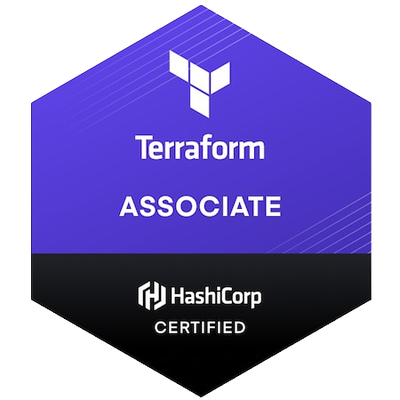
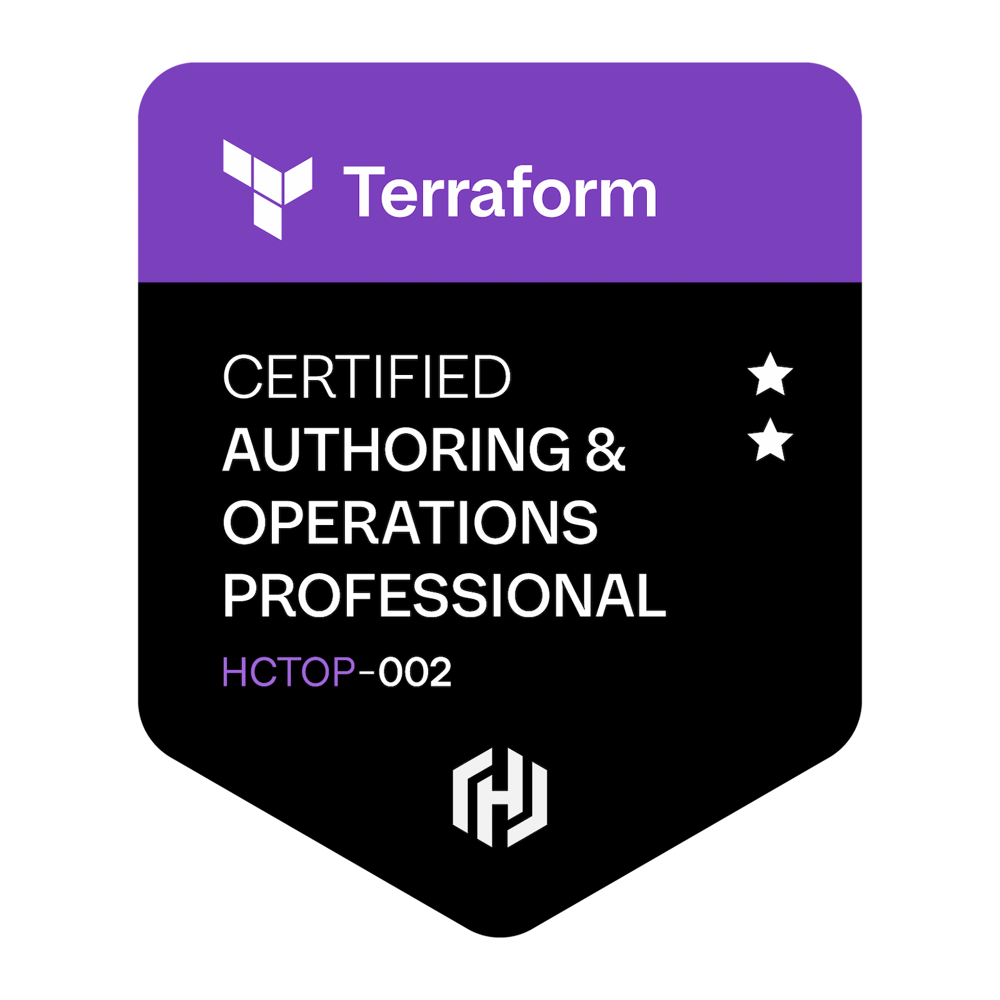
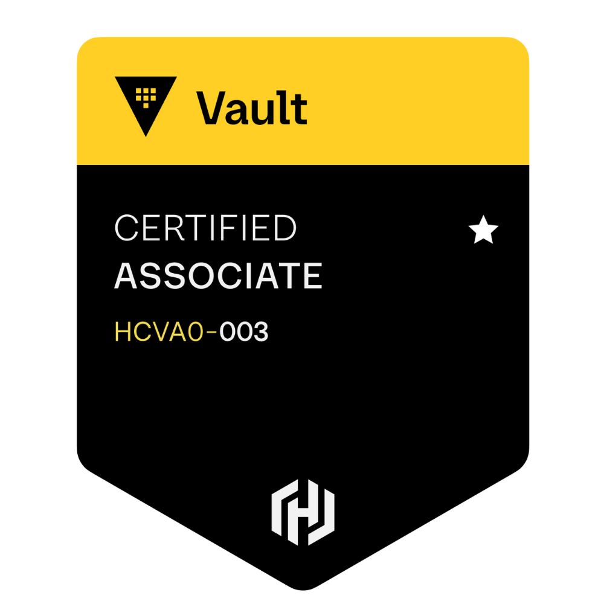
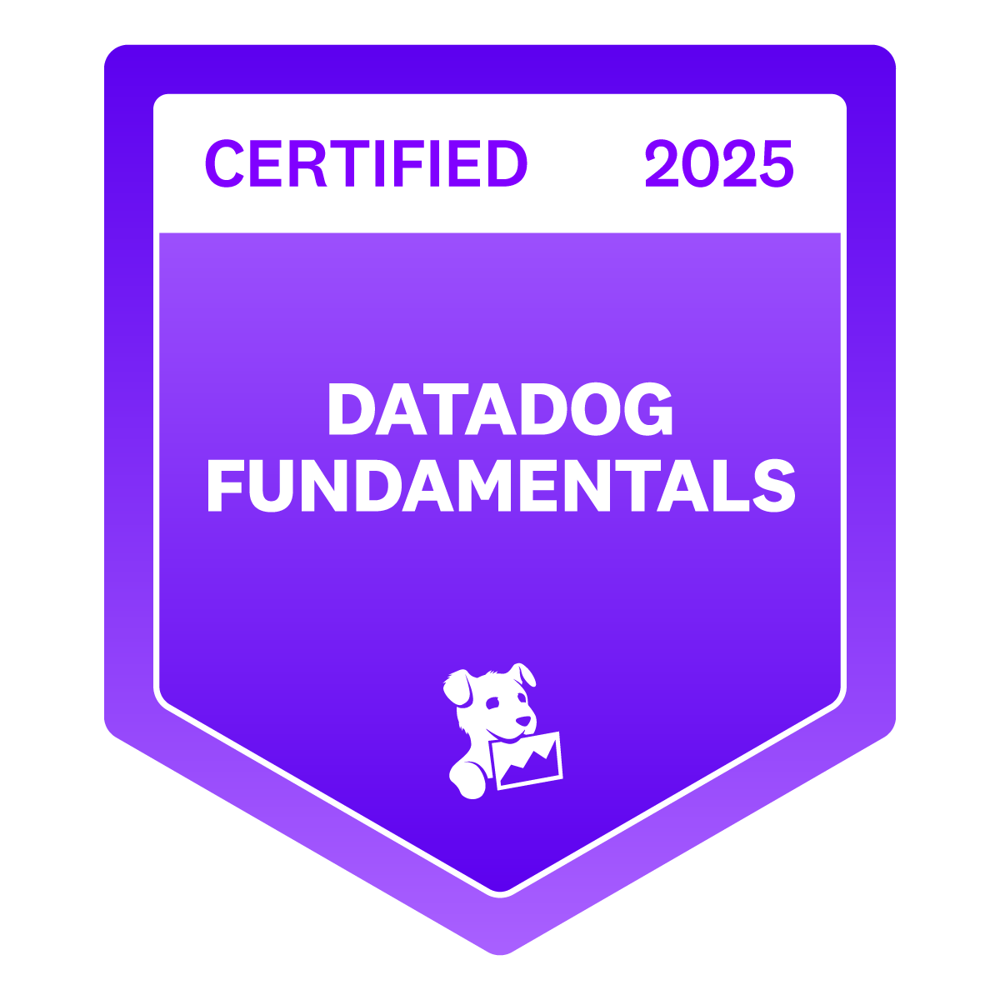
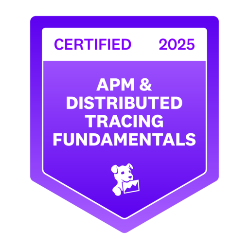
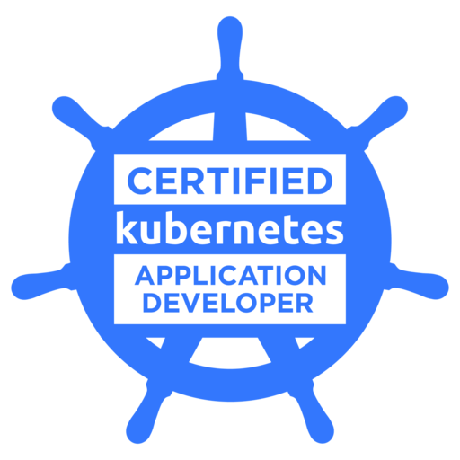
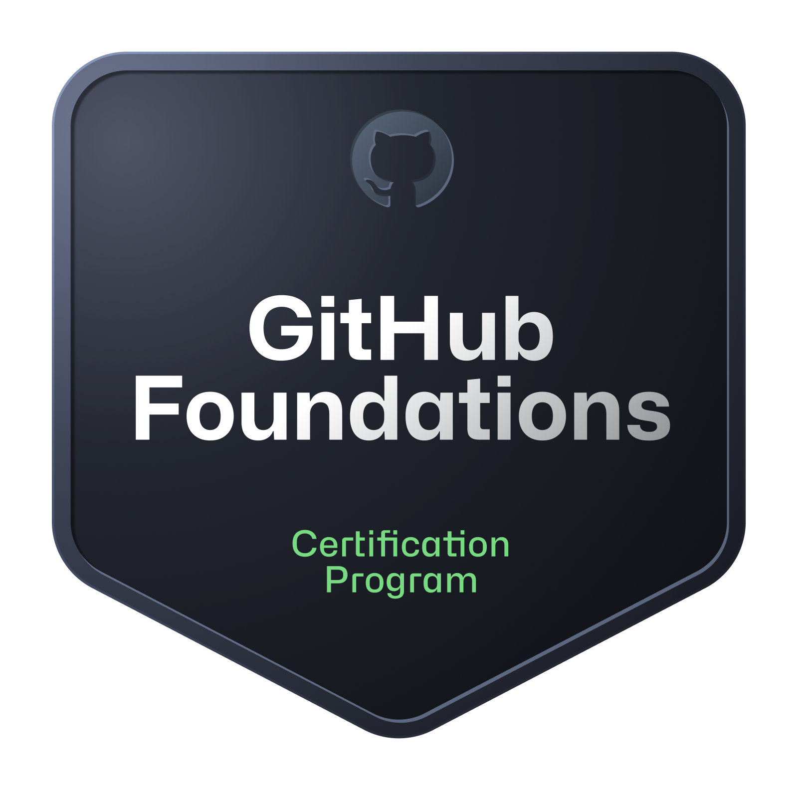
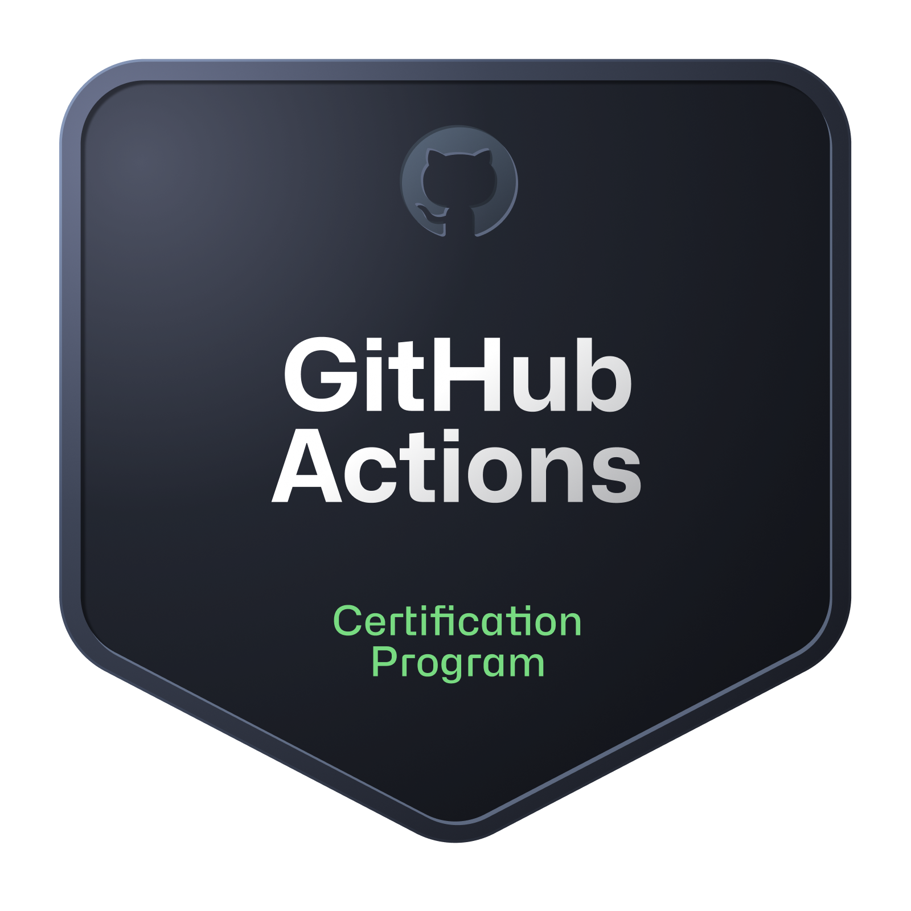

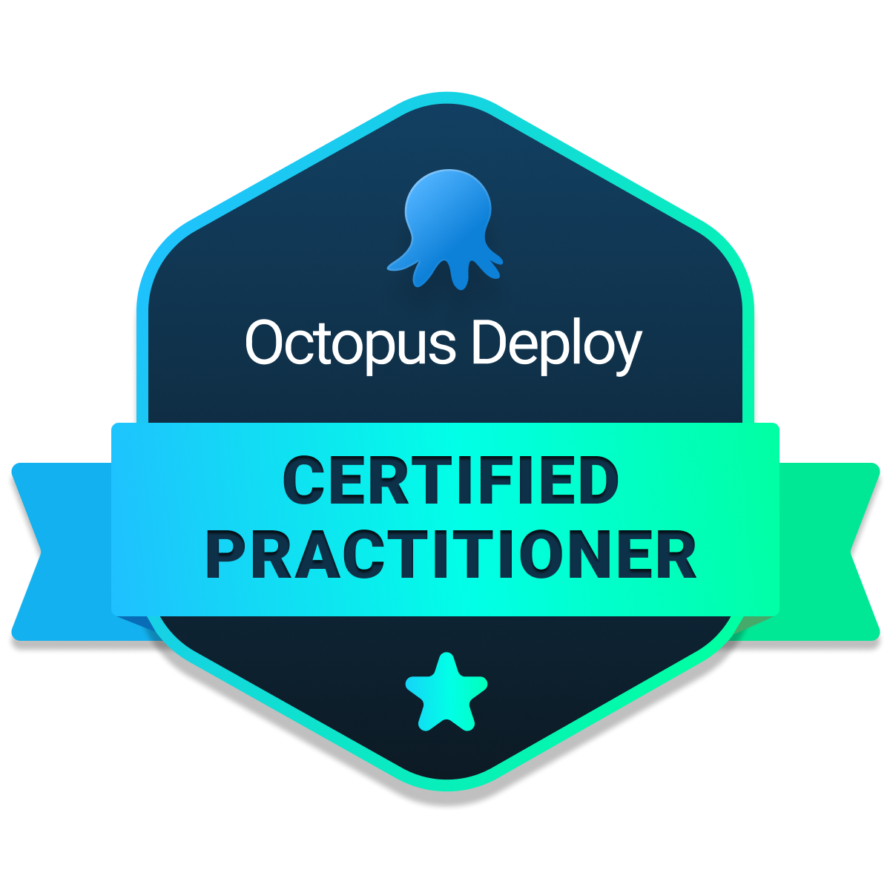
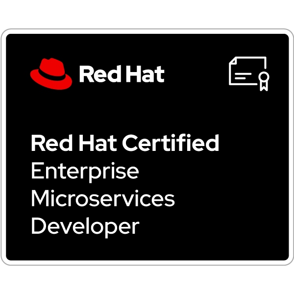
Treinamentos

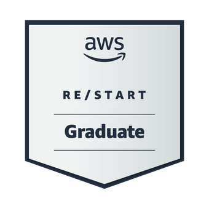
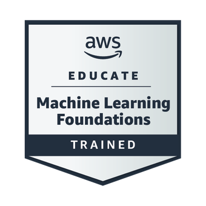

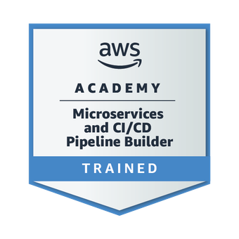
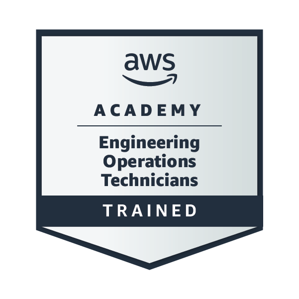
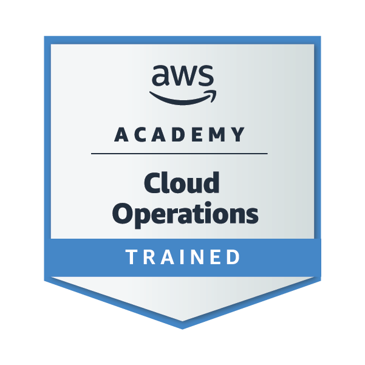
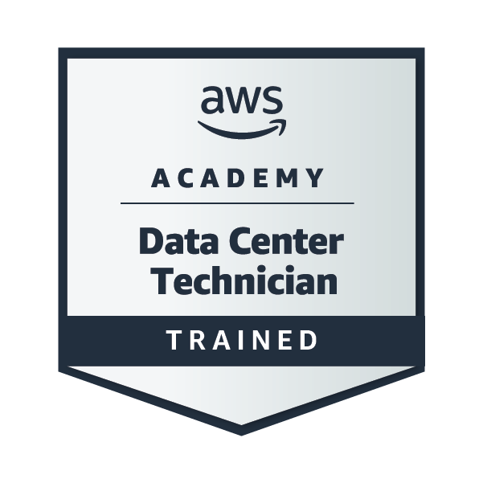
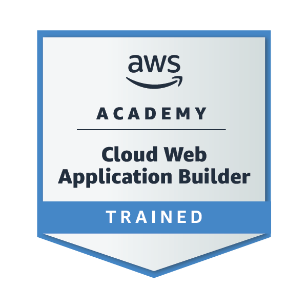
Experiência Profissional
Desenvolvedor de Back-end
Pactus Acessoria em Gestão PublicaDez - 2025 - Atual | Fortaleza - CE
- Atuo no desenvolvimento Backend de aplicaçoes web e apps mobile para gestão na saúde desenvolvendo ferramentas intuitivas que garantem agilidade na tomada de decisão e excelência no atendimento.
- Participo da construção e evolução de APIs e serviços responsáveis por suportar fluxos críticos, como agendamento de consultas, notificações e processamento de dados clínicos.
- Desenvolvo soluções que otimizam a tomada de decisão e melhoram a eficiência operacional, garantindo maior agilidade e qualidade no atendimento aos usuários.
Desenvolvedor e Cientista de Dados
Reis Marcas e PatentesMai - 2025 - Jan - 2026 | Fortaleza - CE
- Atuei no desenvolvimento de um sistema de análise de dados e dashboard preditivo para uma empresa de consultoria de gestao empresarial em marcas e patentes, com foco em otimizar processos operacionais e identificar padrões comerciais.
- O projeto tem como objetivo otimizar fluxos operacionais e identificar padrões comerciais, utilizando pipelines automatizados de dados e modelos de machine learning.
- O projeto envolveu ETL de dados, modelagem preditiva (Regressão, XGBoost) e clusterização de clientes/processos para gerar insights sobre sazonalidade, taxa de conversão e gargalos internos.
- Automação e otimização de pipelines, garantindo consistência, escalabilidade e desempenho no tratamento de dados
- O sistema permite visualizar taxas de conversão, prazos médios, status de processos e clusters de clientes, oferecendo insights para decisões estratégicas baseadas em dados, assim, otimizando o tempo da equipe.
Desenvolvedor de Back-end
Laboratorio de Inovação Digital em Tecnologia e Sistemas de InformaçãoAbr - 2025 - Dez - 2025 | Quixada - CE
- Atuei no desenvolvimento back-end, criando e integrando APIs para conectar diferentes aplicações e permitir a troca de dados de forma rápida e segura.
- Desenvolvi funcionalidades utilizando linguagens como Java, JavaScript, C++ e C#, aplicando conceitos de orientação a objetos juntamente com metodologias de desenvolvimento web, boas práticas de programação e arquitetura limpa. Trabalhei na implementação de autenticação garantindo a segurança no acesso aos sistemas, além de aplicar técnicas de prevenção contra SQL Injection e outras vulnerabilidades
Desenvolvedor de Back-end
Suprema ADMIN - AutônomoNov - 2024 - Out - 2025 | Quixada - CE
- Atuei no desenvolvimento de um sistema automatizado voltado à gestão de dados na área da saúde relacionado a clinicas. Criado para tratamento e processamento de dados com alta velocidade, ele interpreta arquivos totalmente desestruturados como PDFs, Planilhas, Fichas de atendimento, laudos medicos, formulários manuais entre outros, ele organiza as informações e gera planilhas, relatorios detalhados, com hora de atendimento, observações precisa, dados no ponto de serem enviados para analise e validação de informações.
- O sistema vai além da organização, ele realiza a digitação automática dos dados em outros sistemas oficiais, reconhecendo os dados das planilhas e preenchendo campos dos outros sistemas com precisão automaticamente. Em casos de inconsistência, o sistema emite alertas, evita o envio do dados incorretos e destaca a célula em vermelho, seguindo para o próximo item automaticamente.
- O sistema registrou mais de 12.526 procedimentos digitados automaticamente em apenas 5 dias,
processo que antes levaria em média de 45 a 50 dias úteis em regime manual, considerando o volume e a complexidade das tarefas.
Hoje, toda essa carga é executada sozinho.
Projeto Disponivel: Clique Aqui
Analista de Dados Pleno
Visão Connect ClinicaMar - 2025 - Mai 2026
- Responsável pela arquitetura e gerenciamento de pipelines de dados responsáveis pelo processamento de múltiplos milhões em contratos públicos (municipais, estaduais e federais), assegurando alta escalabilidade, integridade dos dados e segurança das informações
- Implementei automações que reduziram o tempo operacional em aproximadamente 90%, automatizando tarefas que antes demandavam uma equipe de cerca de 10 colaboradores.
Analista de Dados
Visão Connect ClinicaFev - 2024 - Mar - 2025
- Atuei na área administrativa com foco em gestão e análise de dados na saúde com uso de python para automatizar tarefas e tratamento de informações
- Organizei e digitalizei registros de pacientes anteriormente mantidos em papel, eliminando processos manuais e reduzindo o tempo gasto com preenchimento de documentações.
- Trabalhei diariamente com grandes volumes de dados, utilizando Excel, Power BI e outras ferramentas para tratamento, cruzamento e análise.
- Automatizei processos manuais, melhorando a organização das informações e contribuindo para a segurança e integridade dos dados.
Tecnico em TI
Visao Connect CLinicaJul 2023 - Dez 2023
- Atuei na área de suporte técnico, prestando atendimento presencial aos usuários, com foco na agilidade, eficiência e resolução precisa dos problemas.
- Realizava manutenções preventivas e corretivas em hardware, identificando falhas recorrentes de desempenho causadas por módulos de memória RAM defeituosos. Após diagnóstico, executava a substituição da memória e a limpeza completa do equipamento, finalizando com a reinstalação e configuração dos softwares necessários para garantir o pleno funcionamento do sistema.
Competência Comportamental
- Aprendizado Contínuo.
- Resolução de Problemas.
- Trabalho em Equipe.
- Proatividade Adaptação e Resiliência.
- Pensamento Crítico.
- Gestão do Tempo Orientação para Resultados.
Idiomas
- Inglês– Avançado
- Espanhol– Avançado
Portifólio
Tecnologias e metodos utilizadas em meus trabalhos para produtividade e desenvolvimento de ambientes escalaveis.
- All
- Cloud Computing
- Developer
- Database
Competência Técnica

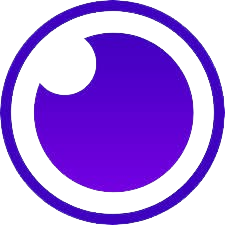
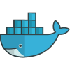

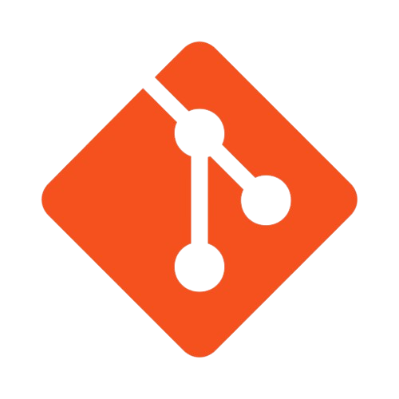
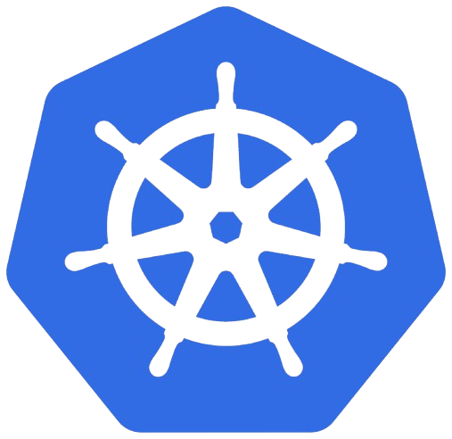
Contribuição a Comunidade
Cloud Computing e Cloud Architecture
- Desenvolvimento de repositório com o propósito de documentar e organizar todos os laboratórios práticos realizados ao longo da minha formação em Computação em Nuvem com foco na AWS. Ao todo, o repositório reúne ( 70 laboratórios ), sendo 40 laboratórios oficiais executados durante a formação, acompanhados de 30 laboratórios extras desenvolvidos por mim para aprofundar o aprendizado técnico e aplicar cenários mais avançados. Os conteúdos estão distribuídos em três níveis de complexidade 10 básicos, 10 intermediários e 10 avançados além de uma seção exclusiva com labs profissionais voltados para quem deseja ir além dos fundamentos, simulando ambientes reais e exigentes de produção em nuvem.
Data Science & Artificial Intelligence
- Desenvolvimento de repositório com o propósito de documentar e organizar todos os laboratórios práticos realizados ao longo da minha formação e estudos em Ciência de Dados e Inteligência Artificial. Todos os laboratórios foram cuidadosamente documentados, contendo descrições detalhadas, códigos-fonte comentados, datasets utilizados, métricas de avaliação, prints e visualizações gráficas, pipelines de processamento de dados, tuning de hiperparâmetros, e simulações práticas baseadas em problemas reais do mercado. Os temas abordados são vastos, desde pré-processamento, algoritmos, programação com python, Fundamentos da estatistica, Fundamentos de Banco de dados, Estrutura de dados, Visualizaçao de dados, Mineração de dados, Modelagem, Programação Aplicada a Inteligencia Artificial, Processamento Textual, Aprendizado Supervisionado e Não Supervisionado, Deep Learning e análise exploratória de dados, engenharia de atributos, engenharia de Prompt até a construção, treinamento, validação e implantação de modelos de IA. Também inclui conteúdos sobre processamento de linguagem natural (NLP), visão computacional, aprendizado por reforço, e integração de modelos com APIs e aplicações web.
Java Development
- Repositório desenvolvido com o objetivo de documentar e organizar todos os laboratórios práticos realizados em Java abordando desde os fundamentos da linguagem até projetos avançados. Cada laboratório contém código fonte comentado, descrição detalhada, objetivo e funcionamento com instruções de compilação e execução. Os temas abordados incluem sintaxe básica, variáveis, operadores estruturas de controle, programação orientada a objetos com classes, herança, polimorfismo, interfaces e classes abstratas, estruturas de dados como listas filas pilhas e mapas com árvores de manipulação de arquivos e serialização, tratamento de exceções generics, uso de streams e API de collections juntamente com programação concorrente e multithreading para integração com bancos de dados via JDBC.
Experiencias Relevantes
Plataforma Financeira
-
O projeto consiste na construção de alguns microsserviços responsáveis por gestão de contas, transações financeiras, pagamentos, tesouraria, ledger contábil, auditoria, reconciliação, risco, scoring, canais digitais, notificações, identidade e segurança (IAM/KYC), orquestração de processos financeiros, integração com sistemas externos, processamento em lote e backoffice operacional, entre outros. A solução funciona em arquitetura Java com processamento assíncrono e comunicação por Kafka, garantindo consistência com o padrão SAGA e registro imutável de eventos para fins regulatórios. A infraestrutura é criada com Terraform, usando EKS, RDS, VPC, Vault, CI/CD com GitHub Actions e GitOps com ArgoCD, além de observabilidade com Prometheus, Grafana e Alertmanager. Na fase inicial são implementadas as bases do ambiente e o módulo de contas, incluindo CRUD completo e integração transacional com PostgreSQL. Em seguida é construído o módulo de transações, responsável por PIX, TED e DOC, usando eventos no Kafka e garantindo exatamente uma vez no processamento. Depois são desenvolvidos os módulos de cartões e conciliação, com rotinas de processamento diário e fluxos em tempo real. Na fase final entram o sistema de auditoria imutável, otimizações de desempenho e testes de resiliência com falhas controladas no Kubernetes, junto com a finalização dos dashboards de SLO e SLI para acompanhamento do comportamento dos microsserviços. Os processos de fechamento contábil executam cálculos e agregações noturnas, enquanto a trilha de auditoria salva todos os eventos de forma permanente para cumprir exigências regulatórias.

Sistema de Gateway de Pagamentos Assincronos
-
Projeto feito para cenários de alta concorrência e baixa latência, inspirado em sistemas do tipo PIX. A plataforma recebe requisições de pagamento e executa o processamento de forma totalmente assíncrona, garantindo atomicidade lógica e consistência eventual entre contas. A arquitetura é orientada a eventos e composta por dois microsserviços principais: um Gateway Handler, responsável pela ingestão, validação e publicação dos eventos de pagamento, e um Transaction Processor, responsável pela execução dos débitos e créditos. A coordenação entre os serviços é realizada por meio do padrão SAGA por coreografia, permitindo compensações automáticas em caso de falhas parciais. A comunicação entre os componentes ocorre via Apache Kafka, assegurando entrega confiável, ordenação e tolerância a falhas durante o processamento. O sistema é executado sobre Kubernetes, garantindo orquestração, escalabilidade e alta disponibilidade. O Gateway Handler foi desenvolvido em Java com Quarkus Reativo, utilizando Mutiny para programação não bloqueante, permitindo milhares de conexões simultâneas com baixa latência. Métricas críticas de desempenho, incluindo latência P99, são monitoradas continuamente por meio do Prometheus. A persistência utiliza PostgreSQL como banco transacional, provisionado via Terraform, com configuração explícita de níveis de isolamento e controle de locks para preservação da integridade transacional em cenários concorrentes.
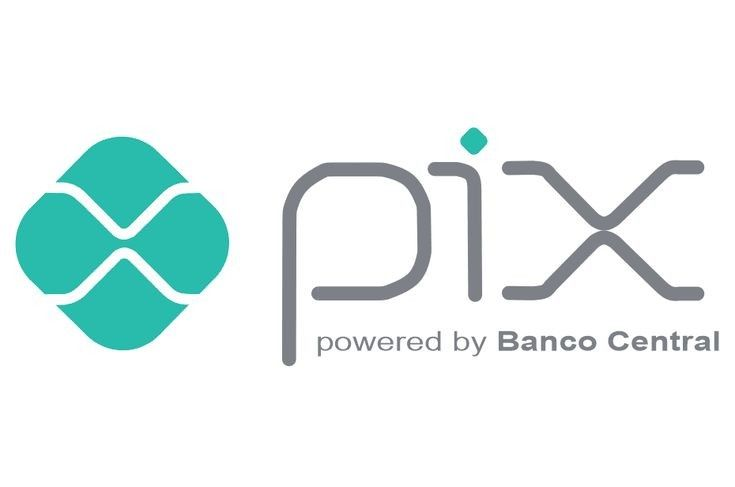
Motor de conciliação de Contas (Batches e Streams)
-
Uma Aplicação projetada para comparar grandes volumes de transações internas com extratos bancários, combinando processamento em lote e em tempo real para garantir precisão de saldos e identificação confiável de divergências. O sistema realiza conciliação batch por meio de jobs complexos implementados em Java com Spring Batch, otimizados para leitura, processamento e escrita de arquivos de grande porte, incluindo extratos bancários com até 10 GB. A execução recorrente desses processos é orquestrada via Kubernetes CronJobs, assegurando previsibilidade e isolamento de carga. Para conciliações contínuas, o motor utiliza Kafka Streams para processar eventos financeiros em tempo real, permitindo a reconciliação imediata de transações, estornos e correções à medida que os eventos são publicados, eliminando a dependência exclusiva do batch diário. Os arquivos brutos são armazenados no AWS S3, garantindo durabilidade e rastreabilidade, enquanto os resultados consolidados de conciliação são persistidos no AWS Redshift, possibilitando análises históricas e consultas analíticas em larga escala. Toda a infraestrutura foi provisionada como código com Terraform, assegurando ambientes reprodutíveis e consistentes. A observabilidade do sistema foi estruturada com Datadog, monitorando a saúde dos workers, o throughput de processamento e o lag das filas Kafka, permitindo detecção proativa de gargalos e falhas operacionais.
Suprema Admin - Sistema de Automação Administrativa de Saúde Clinica e Hospitalar
-
Sistema de automação e processamento de dados voltada à gestão administrativa de clínicas e instituições de saúde, projetada para tratar grandes volumes de informações não estruturadas e integrá-las a sistemas oficiais de forma automática, precisa e auditável. O sistema realiza a ingestão e interpretação de dados a partir de fontes totalmente desestruturadas, incluindo PDFs, planilhas, fichas de atendimento, laudos médicos, formulários manuais e relatórios diversos. A partir desses insumos, a plataforma extrai, organiza e estrutura as informações, gerando planilhas padronizadas e relatórios detalhados com horários de atendimento, observações clínicas e dados prontos para análise e validação, eliminando a necessidade de preenchimento manual. Além da organização dos dados, a plataforma executa automação completa de digitação em sistemas oficiais, reconhecendo campos, validando informações e preenchendo formulários externos com alta precisão. Em cenários de inconsistência ou ausência de dados, o sistema emite alertas, bloqueia o envio de informações incorretas e destaca automaticamente os campos problemáticos, garantindo conformidade e reduzindo erros operacionais. A solução automatiza também a identificação de planilhas e relatórios exigidos por diferentes órgãos reguladores, realizando a extração das informações relevantes e o envio conforme prazos e formatos específicos, eliminando processos manuais e o envio por e-mail. Esse fluxo garantiu padronização, rastreabilidade e conformidade regulatória contínua. Como resultado operacional, o sistema executou 12.526 procedimentos digitados automaticamente em apenas 5 dias, um volume que anteriormente demandava entre 45 e 50 dias úteis de trabalho manual, realizado por uma equipe de aproximadamente 6 pessoas. A automação reduziu drasticamente o tempo de processamento e liberou a equipe administrativa para atividades estratégicas.
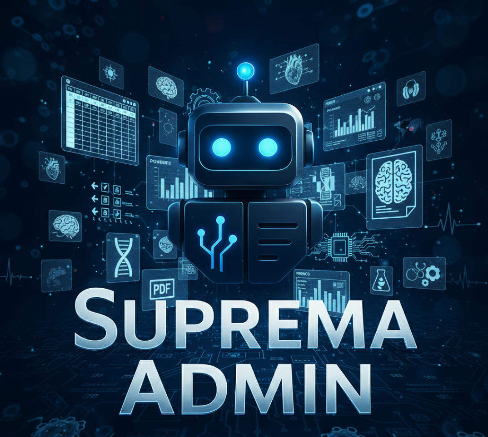
Sistema de Gerenciamento de Limites de Crédito em Tempo Real
-
Em fintechs, o cálculo e a validação de limites de crédito precisam acontecer em milissegundos para evitar overdraft e fraude. Implementei o serviço usando Quarkus com endpoints reativos via Mutiny, garantindo inicialização rápida, baixo consumo de memória e resposta imediata. Isso melhora a eficiência dos pods no Kubernetes (EKS) e reduz custos. No armazenamento de limites usei Caffeine como cache local e AWS ElastiCache (Redis) como cache distribuído, aplicando uma estratégia cache-aside avançada. O Redis foi provisionado via Terraform, e o serviço Java inclui fallback e failover caso o cache fique indisponível. Na integridades implementei o padrão de Two-Phase Commit para manter consistência estrita entre o serviço de limite e o serviço de débito/crédito, atendendo exigências regulatórias de integridade de dados e no testes de performance executei testes de carga em larga escala com Gatling, integrado ao pipeline de CI/CD no GitHub Actions, garantindo que problemas de performance sejam detectados antes da implantação em produção.